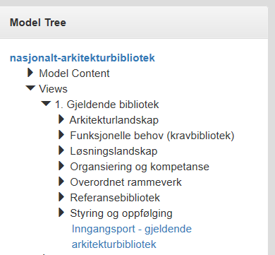

Leseveiledning
1. Navigering i nettsidene
1.1. Navigering i tekstbasert innhold
Navigeringspanelet til venstre lar deg drille mellom websider i innholdsfortegnelsen, mens et panel på høyre side lar deg navigere innen hver webside.
Søkefunksjon er planlagt.
1.2. Navigering i publiserte archi-modeller
Publiserte arkitekturmodeller finnes under https://nasjonal-arkitektur.github.io/models/near-no/ og kan navigeres i nettleser uten behov for annen programvare.
Navigering kan gjøres gjennom drilling mappestrukturen i modelltreet og informasjon om views og elementer finnes i egne paneler i brukergrensesnittet.

Figur 1. Modelltre i publisert Archi-modell
2. Anbefalt for deg
For virksomhetsarkitekter, løsningsarkitekter og tech leads: